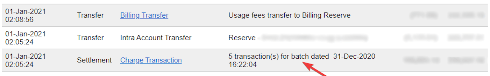
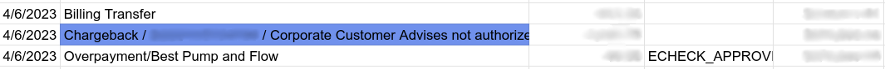

Configuration¶
See also
Credentials tab¶
Odoo needs your API Credentials & Keys to connect with your Authorize.Net account, which comprise:
API Login ID: The ID solely used to identify the account with Authorize.Net.
API Transaction Key
API Signature Key
API Client Key
To retrieve them, log into your Authorize.Net account, go to , generate your Transaction Key and Signature Key, and paste them on the related fields in Odoo. Then, click on Generate Client Key.
Important
To test Authorize.Net with a sandbox account, change the State to Test Mode. We recommend doing this on a test Odoo database, rather than on your main database.
If you use the Test Mode with a regular account, it results in the following error: The merchant login ID or password is invalid or the account is inactive.
Configuration tab¶
Place a hold on a card¶
With Authorize.Net, you can enable the manual capture. If enabled, the funds are reserved for 30 days on the customer’s card, but not charged yet.
Warning
After 30 days, the transaction is voided automatically by Authorize.Net.
See also
ACH payments (USA only)¶
ACH is an electronic funds transfer system used between bank accounts in the United States.
Configuration¶
To give customers the possibility to pay using ACH, sign up for Authorize.Net eCheck’s service. Once eCheck is activated, duplicate the
previously configured Authorize.Net payment provider on Odoo by going to . Then, change
the provider’s name to differentiate both versions (e.g., Authorize.net - Banks).
Open the Configuration tab, set the Allow Payments From field to Bank Account (USA only).
When ready, change the provider’s State to Enabled for a regular account or Test Mode for a sandbox account.
Export from Authorize.Net¶
To export a statement:
Log in to Authorize.Net.
Go to .
Define an export range using an opening and closing batch settlement. All transactions within the two batch settlements will be exported to Odoo.
Select all transactions within the desired range, copy them, and paste them into the Report 1 Download sheet of the Excel import template.

Example
In this case, the first batch (01/01/2021) of the year belongs to the settlement of 12/31/2020, so the opening settlement is from 12/31/2020.
Once the data is in the Report 1 Download sheet:
Go to the Transaction Search tab on Authorize.Net.
Under the Settlement Date section, select the previously used range of batch settlement dates in the From: and To: fields and click Search.
When the list has been generated, click Download to File.
In the pop-up window, select Expanded Fields with CAVV Response/Comma Separated, enable Include Column Headings, and click Submit.
Open the text file, select All, copy the data, and paste it into the Report 2 Download sheet of the Excel import template.
Transit lines are automatically filled in and updated in the transit for report 1 and transit for report 2 sheets of the Excel import template. Make sure all entries are present, and if not, copy the formula from previously filled-in lines of the transit for report 1 or 2 sheets and paste it into the empty lines.
Important
To get the correct closing balance, do not remove any line from the Excel sheets.
Import into Odoo¶
To import the data into Odoo:
Open the Excel import template.
Copy the data from the transit for report 2 sheet and use paste special to only paste the values in the Odoo Import to CSV sheet.
Look for blue cells in the Odoo Import to CSV sheet. These are chargeback entries without any reference number. As they cannot be imported as such, go to .
Look for Charge Transaction/Chargeback, and click it.
Copy the invoice description, paste it into the Label cell of the Odoo Import to CSV sheet, and add
Chargeback /before the description.If there are multiple invoices, add a line into the Excel import template for each invoice and copy/paste the description into each respective Label line.
Note
For combined chargeback/returns in the payouts, create a new line in the Excel import template for each invoice.
Example
Next, delete zero transaction and void transaction line items, and change the format of the Amount column in the Odoo Import to CSV sheet to Number.
Go back to and search again for the previously used batch settlements dates.
Verify that the batch settlement dates on eCheck.Net match the related payments’ dates found in the Date column of the Odoo Import to CSV.
If it does not match, replace the date with the one from eCheck.Net. Sort the column by date, and make sure the format is
MM/DD/YYYY.Copy the data - column headings included - from the Odoo Import to CSV sheet, paste it into a new Excel file, and save it using the CSV format.
Open the Accounting app, go to , tick the Authorize.Net box, and click . Select the CSV file and upload it into Odoo.
Tip
List of eCheck.Net return codes